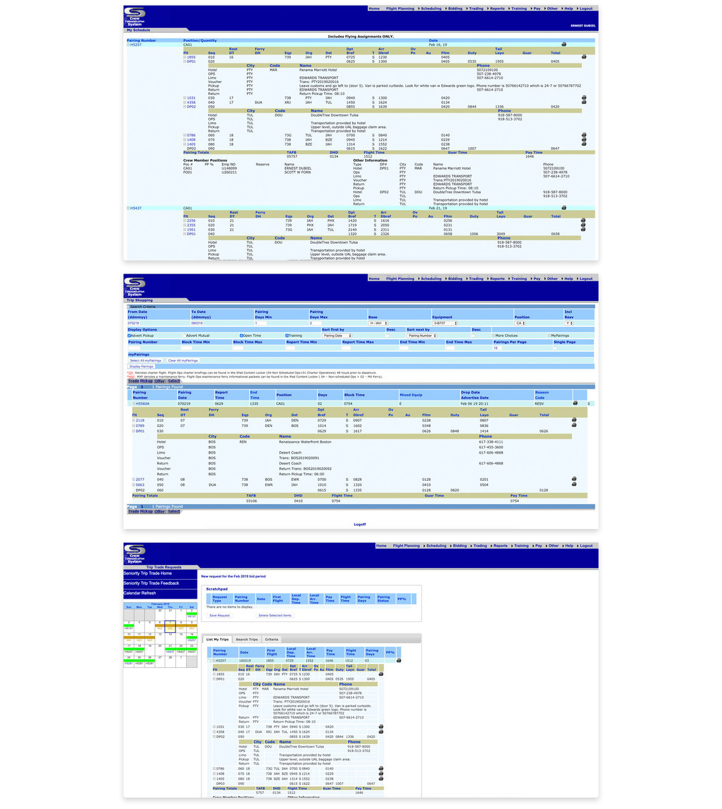

This is my story of redesigning ‘CCS’—a desktop and Android/iPhone mobile software app that empowers United Airlines flight attendants to manage their busy schedules.

This project took place between September 2017 and March 2020. I worked on this project as a UI/UX Engineer/Designer for the Crew CCS IT team at United Airlines.
I was part of a team that worked alongside Business Analysts, Angular Developers, API developers, and project managers. I was responsible for the wireframing, prototypes, interaction design, visual design, and front-end HTML & CSS development for ‘CCS’–an internal software application for United’s flight attendants.
United's Flight Attendant union and IT management approached us to help them redesign their outdated scheduling application into a modern desktop application along with a separate Andriod and iPhone mobile application. Our team focused on envisioning and delivering an application that would transform flight attendants' busy work lives in an effective and meaningful way.
Old CCS App
Our lack of domain knowledge in flight attendants' scheduling needs meant we needed to understand the nature of flight attendant life and service thoroughly and quickly. We approached all aspects of the project collaboratively and spent time traveling to various airports interviewing the flight attendants.
Throughout the project we conducted ethnographic research and used participatory design methods. We observed and interacted with flight attendants in their real-life environment, allowing us to quickly understand the day-to-day challenges of their job. To connect with more flight attendants, we developed and distributed a survey to understand their point of access, usage and attitudes towards information and communications technology. In addition, we conducted workshops, created user stories, low-tech prototypes, and working prototypes. This approach was necessary to gain a valuable source of information that would lead us to our end-decision.
Whiteboard, Paper, Axure RP, Sketch, Invision, Photoshop, Illustrator, code editor, Git.
Every big part of the project started from the whiteboarding sessions in our UX lab. Designers, developers and project managers got together to discuss user profiles, features, goals, and the way to solve the design problems.
The Agile development process required working on separate features and providing the final result every two weeks (each sprint). We needed to incorporate the new design patterns into the old product, keeping it consistent and easy to use. On this stage, the constant collaboration with product managers and developers was important to make sure we were always aligned with the business and technical requirements.
Also, our design team decided to work on every task in small groups (‘squads’), so that every design decision would not depend on only one person. Every ‘squad’ included one or two interaction designers, who were in charge of the interactions, and one visual designer, who was responsible for the interactive prototypes and design mockups.
Defining the right user flows was one of the most important parts of the design process. The complexity of the product required creating user flows for every major feature. Some processes required sending email notifications or signing in to third party services. The most effective way to define and show the flows was to use low-fidelity wireframes with connections between pages and the particular elements of the interface.
While working on the prototypes, my team needed to finalize all the UI interactions and texts, so that we could save time on updating the design mockups in future. One of the challenges at this stage was to provide the best possible designs using a limited number of available UI elements from United’s frontend framework.
To speed up the prototyping process, I created an Axure library with all UI components that were used in the design mockups. The final library included not only static UI elements but also interactive widgets like tables with filtering options, search fields, expandable and collapsable panels, etc. It helped me and the whole design team to create the prototypes much faster.

During the redesign process some pages were kept in the old design style and interaction patterns and were gradually replaced with the new ones. The long-term nature of the project required special attention to the consistency of the resulting UI. To maintain the consistency, my team leveraged the UI kit, adding the new elements to it from time to time. For one of the most used patterns, I created a reusable design template, which helped to create new pages very quickly.
UI reviews were one of the most important parts of the visual design process. After the implementation, the mockups always underwent very detailed UI reviews because the first versions always had some deviations from the originals. Every little detail, from tints of the colors to sizes of the fonts, needed to be checked in order to capture all specifications in a summary document. This work required significant attention to details and played a major role in ensuring the high quality of the final product. I was the key person of the team, driving these reviews.
Building the high-fidelity mockups into HTML, CSS, and jQuery code that could be handed off to the front-end development team was an essential part of the process to ensure that every exact detail of the designs were translated into code. I was the key person responsible for this part of the process. Every detail and pixel from the designs had to be translated into fully responsive applications that were accessible and visually perfect on every device possible, as well as being accessible for visually or hearing impared users.